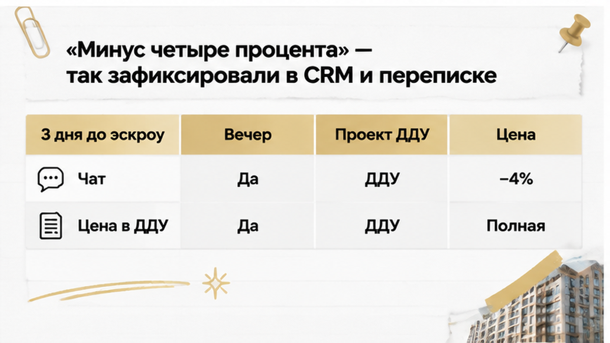
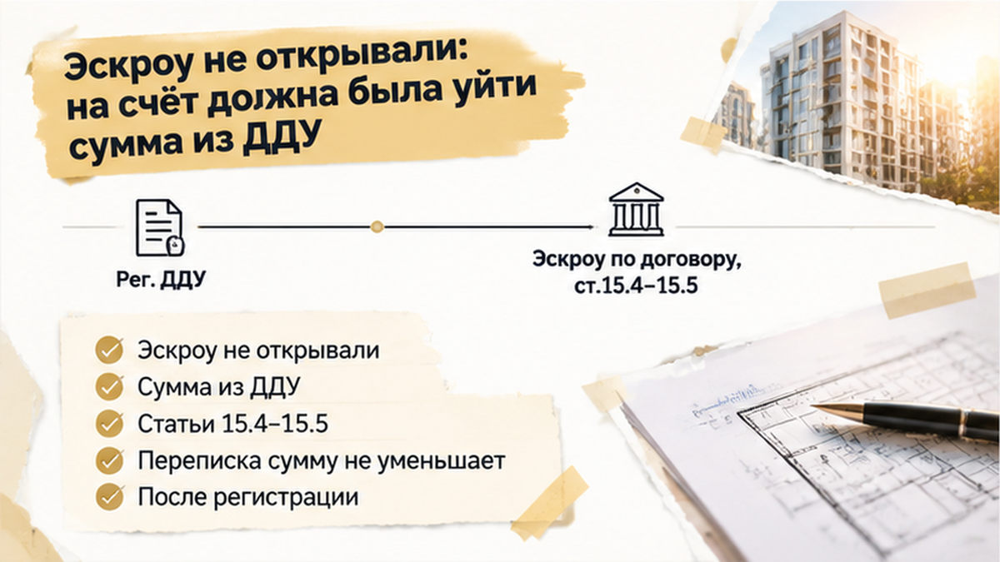
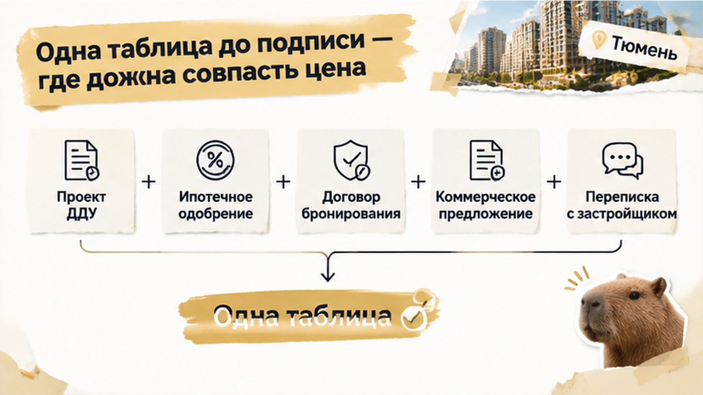

В Тюмени семья остановила покупку новостройки: обещанную скидку 4% не включили в проект ДДУ, а подписать предложили полную цену. Подтверждение менеджера было в переписке, и покупатели уже пересчитали под него семейный бюджет и ипотеку. Квартиру выбрали, стоимость обсудили — оставалось увидеть договорённость на бумаге. Но вечером, когда открыли присланный документ, цифры не сошлись. До планового открытия эскроу оставалось примерно три дня, и вместо подготовки к расчётам пришлось выяснять, почему подписывать нужно одно, а рассчитывать предлагают на другое.
Я Святослав Шакин, The Риэлтор, Тюмень. Напишите в Telegram — подключусь до аванса и разберу проект ДДУ до эскроу. Связь также в MAX.

Здесь покупатели не перепутали рекламное «до» с персональным предложением. Менеджер подтвердил скидку в CRM-чате и мессенджере — для выбранной квартиры, которую семья собиралась брать с ипотекой. Поэтому четыре процента вошли в расчёт покупки, а не остались приятной возможностью из рекламы.
Для обычного покупателя всё выглядит понятно: спросили, получили ответ, сохранили сообщение. «Нам же подтвердили» — в этой фразе нет ничего наивного. Люди вправе ждать, что присланный следом договор будет соответствовать разговору, а не начинать обсуждение цены заново.
Но я при проверке сделки разделяю две вещи: что нам обещали и что предлагают подписать. Не потому, что заранее не доверяю каждому менеджеру. Просто подтверждение в чате ещё нужно довести до цены в договоре, и именно этот переход легко пропустить, когда квартира уже выбрана.
Четыре процента на слух могут показаться небольшой уступкой. Возьмём для расчёта условную квартиру за 14,5–15,5 млн рублей: скидка составит примерно 580–620 тысяч. Это пример масштаба, не стоимость квартиры этой семьи и не её потеря. Но понятно, почему такую сумму учитывают в бюджете всерьёз: без неё покупка становится другой по нагрузке.
Переписку при этом не надо обесценивать: «Да это просто чат». Важно сохранить весь разговор — кто отвечал, когда, о какой квартире и на каких условиях договорились. Если возникнет спор, значение могут иметь и связь отправителя с застройщиком, и его полномочия; один удачный скриншот результата не гарантирует.
Похожая разница между обещанием и тем, что закрепили документами, есть в истории об обещанной чистовой отделке и голых стенах на приёмке. Покупатель запоминает понятный ему результат: сколько заплатит и что получит. При проверке нужно найти этот результат в договоре, а не только в разговоре о квартире.
Проект прислали примерно за три дня до планового открытия эскроу. Вечернюю проверку начали со стоимости — той самой строки, от которой зависел семейный расчёт. И тут подготовка к подписанию перестала быть формальностью: документ требовал вопросов, а не подписи.
В такой момент легко поддаться ходу сделки. Квартира выбрана, ипотеку посчитали, следующий шаг уже запланирован — кажется, неудобно всё тормозить из-за строки, которую обещают исправить. Но строка с ценой и определяет, сколько покупатель обязуется заплатить; это не опечатка в оформлении.
Здесь ключевое слово — «проект». Подписи ещё не было, эскроу семья не открывала, поэтому оставалась возможность сначала согласовать документы и только потом двигаться дальше. Я смотрю на эту паузу не как на помеху покупке: для неё и проверяют договор заранее, пока исправления не приходится догонять после подписи.
Покупатель смотрит на подтверждение менеджера: «Нам же согласовали скидку». Я смотрю на строку, под которой предстоит поставить подпись: какую сумму семья обязуется заплатить? Это не недоверие ради недоверия. Просто бюджет уже посчитан, ипотека тоже, а договор предлагают заключить на других условиях.
В присланной редакции не было ни пункта о скидке, ни оформленного изменения стоимости. Значит, дело не в том, что менеджер забыл ещё раз написать «минус четыре процента». В ДДУ могла стоять сразу итоговая сумма со скидкой — важен не красивый пункт про акцию, а сколько рублей покупатель должен внести за квартиру. Здесь итог оставался прайсовым.
По статье 5 закона № 214-ФЗ именно ДДУ определяет сумму, которую должен заплатить покупатель квартиры в строящемся доме. Если согласованная стоимость до этой строки не дошла, работу с документами ещё не закончили. Сообщение «скидка подтверждена» не исправляет цену автоматически. И подпись покупателя под проектом — совсем не подтверждение того, что он внимательно прочитал чат.
При этом отмахиваться от переписки я бы не стал. Её стоит сохранить целиком: кто писал, когда, о какой квартире шла речь и на каких условиях обещали скидку. В споре могут иметь значение связь менеджера с застройщиком и его полномочия. Но отдельный скриншот не гарантирует ни скидку, ни победу в суде: сохранить обещание — полезно, подменять им договорную цену — нельзя.
В ответ предложили: «Подпишите сейчас, скидку оформим потом». На слух — небольшая перестановка действий, чтобы не задерживать покупку. По сути — сначала семья принимает полную стоимость, а затем ждёт, когда её уменьшат. Причём каким документом и на каких условиях это сделают, из самого обещания непонятно.
Вот здесь я бы убрал слово «потом» и попросил показать порядок изменения цены. Часть 2 статьи 5 закона № 214-ФЗ допускает такое изменение после заключения ДДУ по соглашению сторон, если договор заранее предусматривает эту возможность, случаи и условия. Проще говоря, это не правка сообщения в мессенджере. Нужны основание в договоре и согласованное оформление, а не только уверенный голос менеджера.
Для остановки не требуется сначала доказать, что кто-то хотел обмануть покупателя. Можно не спорить о намерениях вообще: «Мы готовы обсуждать покупку по согласованной цене. Пришлите документы с ней до подписания». Обычный покупатель в этот момент нередко старается не задерживать сделку. Моя задача — не торопить его туда, где главное денежное условие ещё не согласовано.
Семья сказала нет и остановила сделку примерно за три дня до планового открытия эскроу. ДДУ не подписали, счёт не открывали; запросили исправленный проект либо письменное оформление скидки до подписи. Схожее решение приняли покупатели, которые остановились накануне ДДУ после изменения ипотечных условий. Здесь итог — остановка на несогласованной цене: не полученная скидка, не потерянные деньги и не обещание, что всё уже уладили.
Застройщик должен выполнить обещание скидки в переписке — или покупатель вправе рассчитывать только на цену, указанную в ДДУ?

С эскроу легко успокоиться раньше времени: деньги будут на специальном счёте, значит, покупка защищена. Но безопасность расчётов и цена квартиры — разные вопросы. Эскроу не проверяет, все ли обещания менеджера попали в договор. И недостающую скидку к сумме в документе не применяет.
По статьям 15.4–15.5 закона № 214-ФЗ деньги на эскроу вносят после государственной регистрации ДДУ. Основание для суммы — договор и его приложения, а не расчёт покупателя по сообщениям в телефоне. Поэтому отметка «скидка применена» в CRM сама по себе не уменьшает платёж: сначала нужно привести в порядок цену в документах.
Я смотрю на эту последовательность до расчётов, пока расхождение можно устранить без исполнения договора с неподходящими условиями. У покупателя одобрена ипотека — хорошо, но это ещё не означает, что вся покупка согласована. Эту границу отдельно разбираю в истории об одобренной семейной ипотеке и неоткрытом эскроу.

Обычный вопрос менеджеру: «Вы нам точно всё пересчитаете?» Я предлагаю начать иначе: «Покажите итоговую стоимость нашей квартиры в проекте». Не потому, что каждому слову нужно не верить, а потому, что семейный бюджет складывается из рублей, не из заверений. Для проверки достаточно собрать рядом несколько документов — без отдельной папки на каждый разговор.
| Что сверяем | На что смотрим |
|---|---|
| Проект ДДУ | Итоговая цена со скидкой; предусмотрены ли возможность, случаи и условия её изменения. |
| Ипотечное одобрение | Стоимость квартиры, сумма кредита и первоначальный взнос — под какую покупку их рассчитали. |
| Договор бронирования | Стоимость, срок брони, условия возврата денег и удержаний. |
| Коммерческое предложение | Конкретная квартира, акционная цена, срок действия и ограничения предложения. |
| CRM-чат и мессенджер | Кто, когда и на каких условиях подтвердил скидку именно на эту квартиру. |
Здесь не нужно добиваться одинаковых цифр в каждой клетке: кредит — только часть стоимости, остальное покупатель вносит своими деньгами. Нужно другое: чтобы ипотечный расчёт и договор относились к покупке по одной согласованной цене. Заодно станет видно, действует ли предложение при вашем способе оплаты, ипотечной программе и сроке сделки.
Переписку сохраните целиком, вместе с условиями предложения, а не одним удачным скриншотом. Обещание важно, но не заменяет проверку документа — похожая развилка была в истории о земле под ЖК: в офисе обещали собственность, в декларации стояла аренда. Если из-за паузы возникнет вопрос о деньгах за бронь, смотреть нужно её договор: универсального штрафа на такой случай нет.
Нашли расхождение до подписи? Пришлите проект и условия скидки в Telegram или MAX — начнём с того места, где разошлись цифры.
Пауза не обязывает отказываться от выбранной квартиры. Она оставляет вам возможность дождаться исправленного проекта и решить, подходит ли покупка на согласованных условиях. До подписи и расчётов можно требовать ясности, а не покупать обещание разобраться позже.